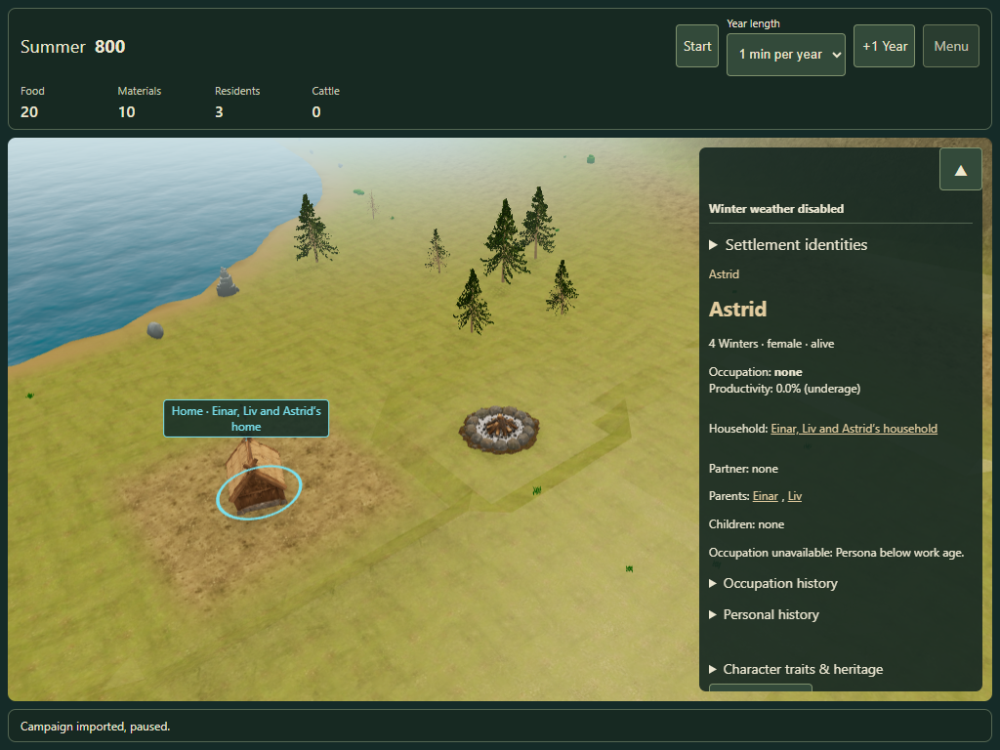
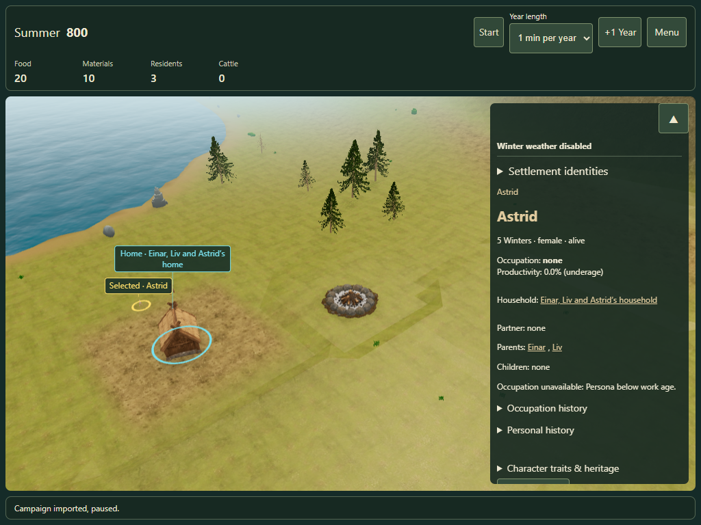

Individual birthdays · #171
Open a new review tab · Calendar contract
The new tab starts a fresh review session. Existing campaigns keep their saved policy. To deliberately opt in from an existing tab, use Menu → Campaign → New campaign from seed with the birthdays query in its URL. Restart preserves the saved policy.
Default activation awaits owner review. The annual economy, mortality and Saga publication keep their existing dates.
Fifth birthday
Touch emulation on desktop Edge: the child stays indoors at four, appears outside at five, remains selected and retains the new age after reload. Physical mobile hardware has not been tested.


Measurements
The full-year Core and native wardrobe timing report is being completed. No performance acceptance is claimed yet.